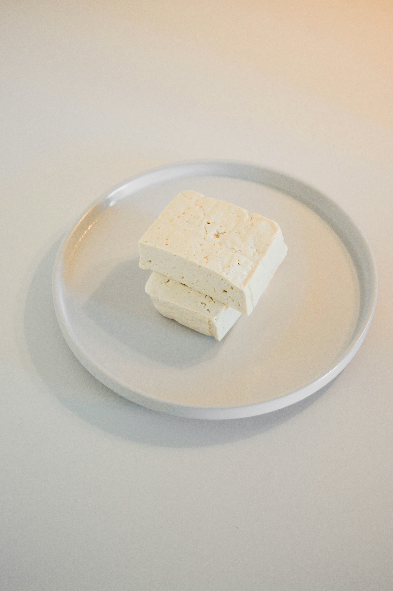

Fried Tofu with Tamari and Sesame Oil

Photo by Christina Deravedisian on Unsplash
Description
This recipe for fried tofu is quick and easy to make, and is a great introduction to tofu.
Ingredients
- 1 block extra firm tofu
- 1/3 cup all-purpose flour
- 1/2 tsp powdered ginger
- Vegetable oil or other cooking oil
- 2-3 Tbsp tamari
- 1 tsp toasted sesame oil
Steps
- Slice the block of tofu in half lengthwise, then slice each half into approximately 1/4 to 3/8 inch thick rectangles.
- In a small bowl, mix together the flour and the powdered ginger.
- Coat all sides of each tofu rectangle in the flour and ginger mixture and place on a plate.
- Place a medium-sized frying pan on the stove on medium high heat. Add vegetable oil (or other cooking oil) to the pan.
- Once the oil is hot, add the tofu to the pan.
- Fry the tofu for approximately 3 minutes, or until just starting to brown, then flip the tofu and fry again until beginning to brown, approximately 2 minutes.
- Once the tofu is light brown on both sides, lower the heat to as low as possible, then pour the tamari and sesame oil over the tofu.
- Remove from heat, and serve.
Home